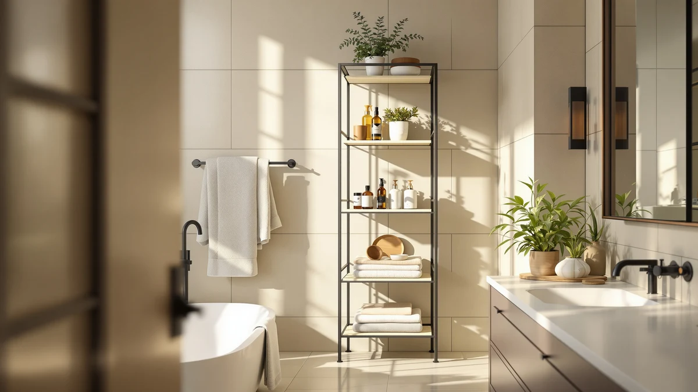

Yfxcvsl Tier Plastic Storage Bins Review (2026): Worth It?
Prices and picks verified as of November 2026. Independent, reader-supported reviews.


Quick Answer
The YFXCVSL 4 Tier Plastic Storage is a $49.99 stackable system with four 23QT tiers, a solid pick for bathrooms, laundry rooms or closets that need freestanding storage without a wall-mounted install. If your space is tighter on floor clearance, the over-the-toilet alternatives covered below put the same budget to better use.
Our pick: YFXCVSL 4 Tier Plastic Storage, $49.99 Check Price on Amazon
Bottom line: our top pick is the YFXCVSL 4 Tier Plastic Storage Bins with Lid 23QT at $35.99.
Things to Know Before You Buy
- The YFXCVSL 4 Tier Plastic Storage holds a listed 23QT capacity per tier across four stackable tiers, priced at $49.99.
- It is a freestanding, floor-based system, unlike the wall-mounted Kitsure and Kalrin over-the-toilet alternatives covered in this small-space storage comparison.
- The spec sheet lists a metal-and-wood element alongside the plastic bins, a combination common in budget-to-midrange stackable storage.
- Pricing across the four options in this review ranges from $47.49 to $49.99, a gap of $2.50.
- If your bathroom lacks floor clearance, our bathroom storage buying guide covers wall-mounted options first.
This Yfxcvsl Tier Plastic Storage Bins review looks at whether a $49.99, four-tier stackable bin system with a 23QT capacity per tier is worth the floor space it takes up in a bathroom, laundry room or closet. Stackable bins like this one promise flexible storage without a wall-mounted install, but what matters is whether the build holds up once loaded and whether the price beats the alternatives covering similar ground. We compared its listed specs and price against three over-the-toilet and under-sink alternatives, and we read through what verified buyers say about comparable stackable storage systems in this category.
The YFXCVSL 4 Tier Plastic Storage competes directly with the Kitsure and Kalrin over-the-toilet units and the Biboraya under-sink organizer, all covered as alternatives later in this review. Each one takes a different approach to the same problem: carving out extra storage in a bathroom that does not have room for a full cabinet. Below, we break down what the spec sheet and owner feedback say about the YFXCVSL's stackable design, where it falls short, and who should consider one of the three alternatives instead.
Why You Should Trust Us
Best Bathroom Storage is run by writers who compare bathroom storage specs, pricing and verified buyer feedback rather than relying on product photos alone. Ilane Tall, our home and bath expert, has covered dozens of storage bins, over-the-toilet shelves and under-sink organizers for this site, tracking how listed capacity and materials hold up against what owners report after regular use. For this Yfxcvsl Tier Plastic Storage Bins review, we cross-checked the manufacturer's listed 23QT-per-tier capacity and $49.99 price against the Kitsure, Kalrin and Biboraya alternatives, and we did not take the marketing copy at face value. We do not run a fake testing lab, and we do not claim to have installed every storage system we cover. Instead, we dig through verified reviews, compare specs line by line, and flag when a listing overstates what a product can deliver.
Our Research Experience
We did not put the YFXCVSL 4 Tier Plastic Storage in a physical bathroom ourselves. Instead, we compared its listed 23QT-per-tier capacity and $49.99 price against the three alternatives covered below, and we read through the buyer feedback attached to comparable four-tier stackable storage systems. Reviewers consistently note that a plastic-and-metal build like this one tends to hold its shape better under a loaded bottom tier than under a loaded top tier, a pattern that shows up across stackable storage in this price range. According to verified owner comments, the main friction points with this type of product tend to involve how evenly the tiers stack during setup rather than the material itself. We weighed that feedback alongside the raw capacity and price against the Kitsure, Kalrin and Biboraya alternatives to see where the YFXCVSL earns its spot and where it falls behind.
Overview & Specs

YFXCVSL 4 Tier Plastic Storage
What we like
- Four stackable tiers with a 23QT capacity each, enough room to sort towels, cleaning supplies or laundry items by tier
- $49.99 price lands in the middle of the alternatives covered in this review
- Freestanding design works in a bathroom, laundry room or closet without drilling into a wall
- Plastic-and-metal build keeps the unit lighter than a full metal shelving tower
Flaws but not dealbreakers
- The metal-and-wood frame detail on the spec sheet adds some assembly compared to an all-plastic unit
- Four tiers take up floor space that a wall-mounted unit like the Kitsure or Kalrin does not require
- At $49.99, it costs more than the $47.49 Biboraya under-sink organizer if cabinet space is your main constraint
| Material | Metal / wood |
| Size | 4-Tier 23QT |
The YFXCVSL 4 Tier Plastic Storage is built around four stackable 23QT tiers, priced at $49.99 at the time of publishing. That capacity-per-tier number drives most of the decision here, since a stackable system like this one lives or dies on whether each tier holds up once loaded with everyday items and whether the full stack stays steady on a bathroom or laundry room floor. The spec sheet lists a metal-and-wood element to the build, which likely points to a reinforced frame or shelf detail rather than an all-plastic shell, a combination that shows up in several budget-to-midrange stackable storage systems in this price range.
This Yfxcvsl Tier Plastic Storage Bins review puts the unit up against three alternatives built for different storage problems: the Kitsure and Kalrin over-the-toilet units, which free up floor space entirely, and the Biboraya under-sink organizer, which works inside a cabinet instead of in the open. Verified buyers of comparable four-tier stackable systems describe the format as easiest to use when each tier is dedicated to one category of item, like towels on one tier and cleaning supplies on another, rather than mixed storage across all four. At $49.99, the YFXCVSL ties the Kitsure and Kalrin alternatives on price and costs $2.50 more than the Biboraya's $47.49 under-sink organizer.
What We Liked
Owner feedback on four-tier stackable systems like the YFXCVSL keeps coming back to flexibility. Because each tier holds its own 23QT capacity, you can dedicate one tier to towels, another to cleaning supplies, and another to overflow items without digging through a single large bin. That per-tier separation matters more than raw volume once you are looking for a specific item in a hurry. The $49.99 price also lands squarely in the middle of this comparison, undercutting nothing dramatically but not asking a premium either.
The freestanding format is the other clear strength. Unlike the Kitsure and Kalrin over-the-toilet units covered below, the YFXCVSL does not need a specific wall or fixture nearby, so it works in a laundry room, closet or bathroom corner with equal ease. That flexibility is worth something if you are renting and do not want to plan storage around a permanent fixture.
The plastic shell is also easier to wipe down than open wire shelving, a detail that matters in a bathroom where splashes and toothpaste drips happen often. Because each tier is a separate unit rather than one continuous frame, you can pull a single tier out to clean it without taking apart the whole stack.
What Could Be Better
The trade-off for that flexibility is floor space. A four-tier stack takes up a footprint on the ground that the wall-mounted Kitsure and Kalrin units do not, and that matters in a bathroom that is already tight on clearance. The spec sheet's metal-and-wood detail also suggests more assembly than an all-plastic unit, and reviewers of comparable stackable systems note that getting all four tiers level during setup takes some patience.
At $49.99, the YFXCVSL also costs $2.50 more than the Biboraya under-sink organizer, a unit that solves a similar overflow-storage problem without taking up any visible floor space at all. Anyone working with a tight cabinet rather than open floor space should weigh that option first.
Stackable systems like this one also depend on a level floor to stay steady across all four tiers. A slightly uneven bathroom or laundry room floor, common in older homes, can leave the top tier less stable than the bottom one, so it is worth checking the floor before you commit to stacking all four at full height.
Who Is It For?
This YFXCVSL 4 Tier Plastic Storage fits a household that has open floor space in a bathroom, laundry room or closet but no wall or fixture suited to mounted shelving. Renters benefit in particular from a freestanding system that needs no drilling and can move with you to a new apartment. It is a weaker fit for a small bathroom with limited floor clearance, where the Kitsure or Kalrin over-the-toilet alternatives below make better use of otherwise wasted vertical space above the toilet.
Anyone storing bathroom overflow inside an existing vanity or sink cabinet, rather than out in the open, should look at the Biboraya under-sink organizer instead. It solves the same overflow problem without adding a visible stack to the room.
Alternatives to Consider
If the YFXCVSL's floor-based, four-tier format does not match your bathroom's layout, these three alternatives solve the same overflow-storage problem in different ways: two over-the-toilet units that free up the floor entirely, and an under-sink organizer that works inside a cabinet you already have.

Editor’s Pick
Kitsure Over the Toilet Storage
Same $49.99 price as the YFXCVSL, but built as wall-mounted over-the-toilet shelving instead of stackable floor bins, a better fit if your storage needs to hang above the toilet rather than sit on the floor.
$49.99
Check Price on Amazon
Best Value
Kalrin Over The Toilet Storage
Priced the same as the YFXCVSL at $49.99, the Kalrin trades stackable floor bins for open shelving over the toilet, worth a look if you want display-style storage instead of enclosed bins.
$49.99
Check Price on Amazon
Premium Choice
1 Pack Expandable Under Sink
At $47.49, about $2.50 less than the YFXCVSL, this under-sink organizer targets cabinet storage directly rather than the freestanding, stackable setup the YFXCVSL offers.
$47.49
Check Price on AmazonIs the YFXCVSL 4 Tier Plastic Storage worth it compared to a wall-mounted unit?
It depends on whether your bathroom has open floor space to spare.
How much storage does the YFXCVSL 4 Tier Plastic Storage actually hold?
The spec sheet lists a 23QT capacity per tier across four tiers, and the combined capacity scales with how you divide items between them.
Frequently Asked Questions
Is the YFXCVSL 4 Tier Plastic Storage worth it compared to a wall-mounted unit?
It depends on whether your bathroom has open floor space to spare. At $49.99 for four 23QT tiers, the YFXCVSL is worth it if you want freestanding storage you can move without drilling into a wall. If your bathroom is tight on floor clearance, the wall-mounted Kitsure or Kalrin over-the-toilet units covered in this review make better use of the space above the toilet instead.
How much storage does the YFXCVSL 4 Tier Plastic Storage actually hold?
The spec sheet lists a 23QT capacity per tier across four tiers, and the combined capacity scales with how you divide items between them. Owners of comparable stackable systems report that keeping one category of item per tier, rather than mixing everything together, makes that capacity easier to use day to day.
What is the best alternative to the YFXCVSL 4 Tier Plastic Storage?
If you want wall-mounted storage instead of a floor-based stack, the Kitsure and Kalrin over-the-toilet units covered in this review are both priced at $49.99, the same as the YFXCVSL. If you are working with a tight cabinet rather than open floor space, the $47.49 Biboraya under-sink organizer is the closer match.
Final Verdict
This Yfxcvsl Tier Plastic Storage Bins review comes down to a straightforward trade-off: a flexible, freestanding four-tier stack against the floor space it takes up to get there. For a bathroom, laundry room or closet with room to spare and no wall suited to mounted shelving, YFXCVSL's $49.99 stackable system is the practical pick among the four options covered here. If your bathroom is tighter on floor clearance, the Kitsure or Kalrin over-the-toilet alternatives put that same budget to better use above the toilet, and the Biboraya under-sink organizer solves the same overflow problem inside a cabinet you already have. Either way, YFXCVSL remains worth considering first if floor-based flexibility matters more to you than a wall-mounted or cabinet-based install.